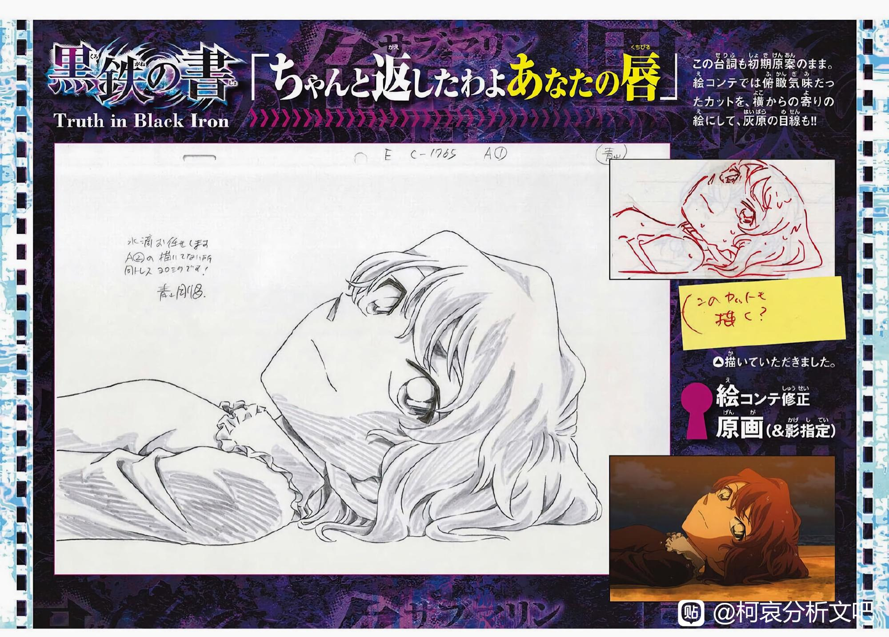

以下大部为暴论，请酌情参考
首先从立川让访谈说起 柯南电影的制作是提前4-5年，M26由青山参与
而我们知道，由于疫情原因，M24到M26都延期了一年，M26本应2022年4月（泰坦尼克失事110年）上映
而往前算5年，就是2017中旬到2018年中旬
即红修篇漫画的发表时间 而青山本来，是要让新一在M26吃药变大的
这颗解药是新一在红修篇留下并藏起来的 由以上内容可以得出第一个暴论：
红修篇从一开始就是和M26一起计划好的，柯南藏药这个伏笔，就是为了让新一在M26吃掉这颗解药才埋下的
在开始暴论2之前，先对上文做补充
从人物心态角度触发，其实新一早在伦敦篇就有藏药的倾向了 也就是“
偷藏解药并在之后用掉”这件事在剧情中迟早会发生
而红修篇虽然不是青山“早就想画”的内容，但在实际画出来之前也一定有过设计规划
但是，青山选择在红修篇，也是M26开始制作的时间段里，使用这个早就计划好的桥段，肯定不是巧合
红修篇，就是和M26，通过“
柯南藏药”伏笔连接的，同一个系列
而以这颗藏起来的解药为核心展开，总结围绕这颗解药的故事（原定版），大致就是：
新一没有使用本来可以用来和兰接吻的解药，并在M26中为了哀使用了这颗解药，并在M26最后达成了“柯哀嘴对嘴”的成就
这样就可以发现第二个暴论
青山画红修篇，就是为了垫M26
按这种理解，就可以解释，为什么一向只给新兰埋暗雷的青山，会在红修篇大量使用明雷
（比如茶茶之前分析的，
恋くれない）
从人物心态角度触发，其实新一早在伦敦篇就有藏药的倾向了 也就是“
偷藏解药并在之后用掉”这件事在剧情中迟早会发生
而红修篇虽然不是青山“早就想画”的内容，但在实际画出来之前也一定有过设计规划
但是，青山选择在红修篇，也是M26开始制作的时间段里，使用这个早就计划好的桥段，肯定不是巧合
红修篇，就是和M26，通过“
柯南藏药”伏笔连接的，同一个系列
而以这颗藏起来的解药为核心展开，总结围绕这颗解药的故事（原定版），大致就是：
新一没有使用本来可以用来和兰接吻的解药，并在M26中为了哀使用了这颗解药，并在M26最后达成了“柯哀嘴对嘴”的成就
这样就可以发现第二个暴论
青山画红修篇，就是为了垫M26
按这种理解，就可以解释，为什么一向只给新兰埋暗雷的青山，会在红修篇大量使用明雷
（比如茶茶之前分析的，
恋くれない）
2023-10-09 02:56 | 赶车的鲁鲁修:好多回复提示在消息提醒里看见，点进帖子看不见了……回都回不了
而如果红修篇和M26是直接联系起来的话，那么红修前后，和红修篇直接联系的几个篇章，也可以视为一个大系列的一部分。于是我们可以从红修篇相当于尾声的寻找玛利亚篇，找到最后一个暴论的线索
（你看❤）
关于这个篇章，因为包含和111-113话，1110-1112话这两个篇章相同的要素，经常会被各种分析党三个篇章一并拿出来分析，但是除了一些零散的关于若狭的线索，一些致敬，并没找出什么特别有价值的东西。但是现在不一样了
先回到M26
青山说了最后的星空部分是“
水下恋爱喜剧”
而青山刚刚又被发现说了眼镜护符那里，是“
让大家知道灰原喜欢柯南的
唯一镜头”
这个时候大家就会猜，如果那里是
唯一，那水下恋爱喜剧到底表明了
谁的箭头呢？难道是
柯南对哀么？
正常的分析也就是到此为止了，因为这刚好符合大家对青山风格的了解：“
模棱两可，似是而非”
但是我们这里是
暴论，所以还要继续
答案就在饮水鸟这里 这个画面，包含了一个很直观的信息
即
箭头在水中反过来了
没错，结合之前
水下到底表明了谁的箭头呢？难道是柯南对哀么？这个猜测
青山其实在这个红修篇的后续，已经给了我们答案：
箭头，在水中，是反过来的
关于这个篇章，因为包含和111-113话，1110-1112话这两个篇章相同的要素，经常会被各种分析党三个篇章一并拿出来分析，但是除了一些零散的关于若狭的线索，一些致敬，并没找出什么特别有价值的东西。但是现在不一样了
先回到M26
青山说了最后的星空部分是“
水下恋爱喜剧”
而青山刚刚又被发现说了眼镜护符那里，是“
让大家知道灰原喜欢柯南的
唯一镜头”
这个时候大家就会猜，如果那里是
唯一，那水下恋爱喜剧到底表明了
谁的箭头呢？难道是
柯南对哀么？
正常的分析也就是到此为止了，因为这刚好符合大家对青山风格的了解：“
模棱两可，似是而非”
但是我们这里是
暴论，所以还要继续
答案就在饮水鸟这里 这个画面，包含了一个很直观的信息
即
箭头在水中反过来了
没错，结合之前
水下到底表明了谁的箭头呢？难道是柯南对哀么？这个猜测
青山其实在这个红修篇的后续，已经给了我们答案：
箭头，在水中，是反过来的
2023-10-08 01:20 | nusuaihxi:继续，不过水下恋爱喜剧的形成时间好像在眼镜之后，我觉得用柯南追着跳下水，吼佐藤来体现会合适一点2023-10-08 02:42 | 沉梦昂志am🐼:woc 你这也这也太会了2023-10-08 02:51 | AYUnbelievable:！！！！2023-10-08 04:12 | 星夜时刻:天才2023-10-08 06:29 | 🍁傻敷敷的小颜:难他天？！2023-10-08 10:56 | 贴吧用户_GbP8JQX:wc太会了2023-10-08 12:13 | 贴吧用户_QJNGZAy:而且光折射属于物理现象，化学和医（药）学博士的志保即便不熟悉也不奇怪，对应福尔摩斯偏科严重，对许多社会常识不熟悉，并表示即便了解，也要忘掉（血字的研究）。2023-10-08 13:07 | 关于柯的故事:列文虎克2023-10-09 00:32 | 缈缈碎尘烟:天才！出院！2023-10-09 02:01 | 三月I弥生:难他天？！2023-10-09 02:02 | sc439291470:是天才？？2023-10-09 02:30 | MIZUNO葵:這個論點讚2023-10-09 02:33 | 一只白鸟º◆º:太会了！2023-10-09 03:12 | 学都◎普通学生:天才！2023-10-09 10:00 | 安也yya☜:天才！！2023-10-09 10:52 | 维为就赵💯:难道他真的是天才？！2023-10-09 20:59 | 无边落木😱:啊？真有天才2023-10-09 21:03 | 一颗鱼丸不要面:难道他...2023-10-09 21:46 | 无定形生物Ω:天才！2023-10-30 00:17 | 虬空:天才！2023-11-06 20:22 | 踏破燕山月色秋:天才2023-11-11 19:42 | 贴吧用户_5N451RG:难道他真的是天才！2024-01-06 01:29 | 贴吧用户_QKV5ZJR:天才！！！！

当然也可以用另一种理解来解读这个画面的要素
即“
透过水看到的箭头与实际方向相反”
那么M26是谁
透过水看到了柯哀间的箭头？
是观众
观众
眼里箭头的方向是？
哀对柯
所以结论不变
水下恋爱喜剧，就是表明了柯对哀的箭头
青山怕你看不出来，还特地提醒了一下
暴论完毕
Fin
2023-10-08 01:55 | Mueinin4869:喔喔，所以在岸上是哀對柯的明箭頭，水下箭頭反過來了，是柯對哀！
PS：
之前提到过的三个相关的篇章，包含的信息肯定不止和M26相关的部分，不过和本次暴论无关，所以也没有详细研究
还有就是按照上文，挂件篇应该也和M26高度相关，不过也没细研究）
具体研究就拜托各位吧友了
（我就是单纯太久没法主题贴了，过把瘾）（bushi）
这已经不能算暴论了吧，不管对不对，这不就是正经推理吗() 暴论应该是那种完全没有前因后果和任何联系的结论，这个分析很合理啊
2023-10-08 01:35 | 赶车的鲁鲁修:其实有很多不确定的细节选择了对自己的理论有利的解释，并不是完全合理）2023-10-08 02:53 | mw1974812:回复 赶车的鲁鲁修 :逻辑能说通就行，分析嘛，猜测肯定是有的，毕竟是柯哀分析文吧当然朝自己有利的地方分析，谁能完全客观无偏向呢
柯子必然知道自己是怎么在海里醒过来的，但还吻之后柯子看着哀看他的眼神，知道了哀把人工呼吸当吻了，然后露出了值得深思表情，这里我也丢个暴论：柯子将有希子的话正式证毕，但还没有证据，故柯子未来会主动搜索

天才！这个箭头反过来确实可以这么解读。而且这么一想这青山这恶意简直要溢出来了：新一没有和兰接吻省下的解药，最后用在了和哀的人工呼吸上——青山老贼有点太“恶毒”了
2023-10-08 02:26 | 贴吧用户_Q57Pt88:先不管对不对，这个水中的箭头是反过来的，真的磕到了。
确实，通过一颗药链接漫画和m26，达成了把吻给真正的爱人。这个链条之下一切都能解释通了。不过这颗药没用成的话，接下来还会用在哪里呢？
2023-10-08 02:32 | 别XB乱叫☜:既然青山一开始就打算给新哀用，那八九不离十新哀后面肯定会想办法搞，药也一定会通过另一个事件用哀身上2023-10-08 02:38 | 心如止水之清:回复 别XB乱叫☜ :用在漫画里最好了！漫画就没人干涉73想怎么搞了2023-10-08 02:46 | 别XB乱叫☜:回复 心如止水之清 :现在青山话语权大了，M26里的柯哀戏就是他搞的，也没人去干涉（如果别人干涉可能没现在这么劲爆了），既然这次剧场版他一开始想搞新哀没成，说不准以后剧场版会搞2023-10-08 06:34 | 🍁傻敷敷的小颜:不过我也希望他漫画里也搞一点，毕竟漫画是原作
回复 别XB乱叫☜ :都阻止变成新一去救哀了2023-10-09 11:13 | 缕陈好:只能期待突然决定的m30青山没有任何阻碍
回复 🍁傻敷敷的小颜 :就是个想法罢了，说明青山也觉得不急，青山真想搞根本阻止不了的

说的好啊
ca就是好啊，每周都能吃新糖
这个解释有备用药动画里是删掉了吗？我刚才去找了一下没有找到啊
2023-10-08 02:53 | 随意♬飘荡:是的，动画组删掉了2023-10-08 03:25 | 🌱瑞琪:动画组放在1102话解释了一下，隔了好几年2023-10-08 03:34 | 伦飒:回复 随意♬飘荡 :动画组这都删啊？2023-10-08 05:01 | 贴吧用户_5726KyK:回复 伦飒 :明美：这很奇怪吗2023-10-08 05:05 | 伦飒:回复 贴吧用户_5726KyK :那确实不奇怪2023-10-08 06:36 | 🍁傻敷敷的小颜:动画组罪大恶极2023-10-08 07:32 | 灰太狼我不怕你:回复 🌱瑞琪 :真无语2023-10-08 07:37 | 赶车的鲁鲁修:回复 灰太狼我不怕你 :111和1112是“和本篇相关的两个篇章”。这个留药本身的出处是1005话的结尾

说的好
2023-10-08 06:39 | 岩仔呦◆:好家伙 这个表情包都有灰原版本的了
天才！
天才！
不知道哪个沙雕网友发了个柯亲哀反复循环的动图，导致我现在一看到饮水鸟就想起柯哀
2023-10-08 05:01 | 贴吧用户_5726KyK:那个摆件啊2023-10-08 06:02 | 狗粮mp40-:回复 贴吧用户_5726KyK :对对对，就那个
其实是反过来的啊
天才！


牛啊
看完楼主分析，又刷b站脑子里灵光一闪想到：
青山的这幅原画里面柯是握住哀的手腕，M26里这一幕后还有哀瞳孔地震回忆柯的画面，而柯就在哀眼前肯定注意到哀的变化了，这里感觉就类似神夏里的福艾场面，柯（福）握着哀（艾）的手腕，感受哀（艾）的脉搏跳动，柯（福）看到哀（艾）瞳孔放大，是否就表示柯意识到哀的心意了呢，而柯对哀塞呼吸器一方面是不想让她si，另一方面是对哀的回应（即水下画的是柯对哀的箭头）（应该有过度解读，看个乐呵，本人也不太擅长分析，只是突然有个想法 ）
）
青山的这幅原画里面柯是握住哀的手腕，M26里这一幕后还有哀瞳孔地震回忆柯的画面，而柯就在哀眼前肯定注意到哀的变化了，这里感觉就类似神夏里的福艾场面，柯（福）握着哀（艾）的手腕，感受哀（艾）的脉搏跳动，柯（福）看到哀（艾）瞳孔放大，是否就表示柯意识到哀的心意了呢，而柯对哀塞呼吸器一方面是不想让她si，另一方面是对哀的回应（即水下画的是柯对哀的箭头）
（应该有过度解读，看个乐呵，本人也不太擅长分析，只是突然有个想法）
2023-10-08 06:44 | ShadowDra26:那确实放大了，都地震了2024-01-04 23:09 | 关三小姐_:天才！
所以这里还特地设计灰原解不出，打电话给柯南。水下，箭头，反转！刚圣！
好解析
17年画修学旅行的时候身体不好，m26的柯哀戏可能当时就想到了个零头，如果自己不行了，就作罢。
剧场版的脚本大部分都是编剧和导演写的，自己就只能修改和添加，删减，很费时间的
剧场版的脚本大部分都是编剧和导演写的，自己就只能修改和添加，删减，很费时间的
妙啊 水里是反过来的
wc 天才！？

我觉得不止是在饮水鸟那篇就想好怎么伏笔了，our glasses，sherry，the answer，三个吻，很可能在满月篇之前那时候刚子就在计划为柯哀剧场版在原著里埋线了
其实说起来，柯南送护身符眼镜给哀，哀反送护身符眼镜给柯，这种互换护身符的场景搁在名柯任何一对CP身上，都是代表双箭头吧。
难他天？！
对了，还可以结合那话的标题
《你看❤》
变成
你看那水中的❤箭头是反过来的~~
2023-10-09 01:09 | 赶车的鲁鲁修:顺便这之后柯本人没有明确认知的原因，青山也告诉你了：他不懂爱。有了箭头，但本人不知道是喜欢。如果成立就相当于青山认证爱而不知）2023-10-09 01:49 | 随意♬飘荡:回复 赶车的鲁鲁修 :原来那话标题是这样啊，我一直都忽略了，这就有意思了，不算暴论啊
lz也太细了吧喜欢钙每天都有糖吃
喜欢钙每天都有糖吃大草，你这开头的兔斯基表情和加粗红字让我以为这是十年前的坟贴被挖上来了
天才！
天才
天才
摄入今天的感动

好贴我疯狂dd
箭头反过来？我想起了小栗的视频那只叫诺贝尔的猫，那个案子就叫颠倒的结局，这只猫代表小哀，难道青山真是个天才？
2023-10-09 18:40 | 闲过信陵饮♬:感觉颠倒的结局这个标题也有意思了
天才
天才
天才！
天才！
天才
天才
天才
天才！
楼主说是暴论有点谦虚了，如果能再精确点，确认m26在修学篇后起笔，那么就能证明这一观点，甚至可以把m26真正列为感情主线而不是番外
厉害啊这个想法